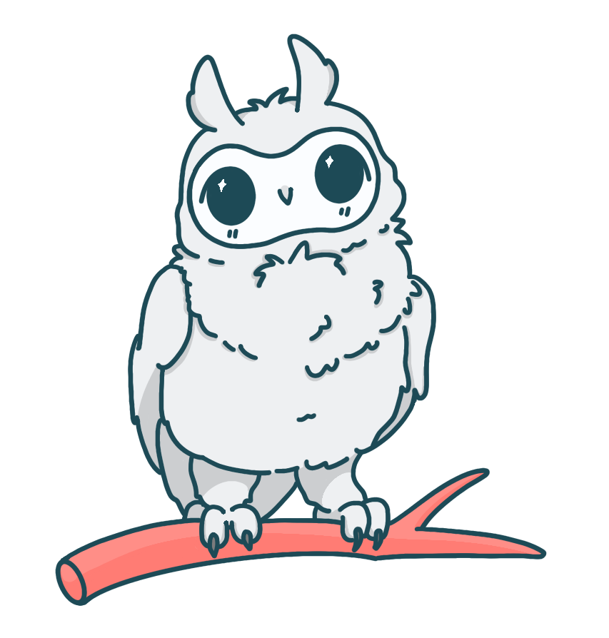

Web Design
Responsive layouts, visual systems, information hierarchy, and digital experiences designed around the user.
A little about me
I'm Samantha Altamirano, a multidisciplinary digital designer specializing in web design, UI/UX, graphic design, and visual storytelling, with a Bachelor of Arts in Digital Design with an emphasis in Web Design from Grand Canyon University.
Add your photo here later

How I got here
I earned my Bachelor of Arts in Digital Design with an emphasis in Web Design from Grand Canyon University. My education gave me the opportunity to explore web design, UI/UX, graphic design, branding, illustration, product design, and digital experiences.
Throughout my studies, I became especially drawn to creating digital experiences that combine strong visual design with usability and function. I enjoy taking an idea, figuring out how it should work, and shaping it into something that feels polished, intuitive, and purposeful.
My approach to design is driven and thorough, but always grounded in empathy. I care about the people interacting with what I create, and I believe good design should balance personality, usability, and purpose.
What I do
My background spans digital design, visual communication, illustration, product thinking, and front-end development.
Responsive layouts, visual systems, information hierarchy, and digital experiences designed around the user.
Interface design, product thinking, prototyping, user flows, and thoughtful interaction design.
Branding, advertising, visual identity, social graphics, print design, and digital communication.
Character design, digital illustration, visual storytelling, and creative assets with personality.
Tools & skills
Beyond design
My professional background has also strengthened skills that directly influence how I work as a designer: organization, communication, leadership, accuracy, and customer empathy.
I've worked in content design, customer service, team leadership, mentoring, and administrative roles — experiences that taught me how to communicate clearly, manage details, and work with people from different backgrounds.
View my résumé →What's next?
I'm currently pursuing opportunities in web design, UI/UX design, and graphic design where I can combine thoughtful problem solving with strong visual storytelling.